Windows 7 Login/Unlock Page


The gateway to knowledge at your fingertips, the Login/Unlock screen for Windows 7 and OS X is the gate to the wonders of computers.
The typical behavior of any system's login/unlock screen is to provide security from unwanted access. A desktop or laptop computer’s login screen is likely to be recognizable whether it is run on Windows, Linux, or OSX. While the aesthetics may change from platform to platform, the same idea and function is prevalent in all platforms. Each screen has a number of possible users that can be accessed. Each interface has the option of restarting or shutting down the system. If the account has no security, the user can automatically login. Mobile platforms typically have extra functionality like the ability to view notifications and access other device specific actions like apps and messages. Similarly to their desktop and laptop counterparts, mobile devices require password or passcode entry to access the device. Please see platform-specific instances for more.
The main purpose of login/unlock screens is to provide a security barrier against unwanted users. The primary way to accomplish this is to have a text entered password or passcode that is required for entry into the system. Hence, the most relevant events for the majority of login and unlock systems are for entering in text, clearing text, errors (for denying the password), and accepts (for accepting the passcode).

The appearance of login screens on desktop systems typically contain a two main features: a selection of users and a text box in which to enter passwords. OSX and Windows systems also allow the user to create an avatar for themselves. Mobile devices typically implement some version of a lock screen that displays notifications and other information that the user can view without unlocking their device as well as a separate login screen that displays an interactive interface for which users can set up a password, PIN, or other type of passcode to secure their device. A common feature on newer platforms on both mobile and desktop systems allow users to choose background images for their lock screens.
For more information regarding each specific platform's typical appearance, please navigate through the following links for more:
OSX Mavericks
The most important priority metric for a login/unlock user interface is efficiency. As login screens are so prevalent across a variety of platforms, most users will gain no satisfaction from correctly logging in; rather, they likely only care that this happens as quickly as possible.
Learnability and errors are equal parts important in improving efficiency. The few users who are unaware of what a login screen does are likely also unfamiliar with the concept of a password. They might thus be confused when prompted for a password to log in. Errors are unlikely for experienced computer users -other than typing in a wrong password, which doesn’t apply here-. However, all platforms need clear navigation for sleep, restart, shut down, and clicking on the desired user so as to reduce errors and improve efficiency.
The most common way to login to the computer is through a password. Both Windows and all OSX platforms have this option. If the user types in the wrong password a password hint will be shown if previously supplied by the user. Once the user types in the correct password, they are successfully logged in to their account.
On Windows 7, some computers have the option for a fingerprint scanner. A fingerprint scanner allows the user to use their fingerprint as a password by swiping their selected finger onto the scanner. As such, either the fingerprint or password for each user can be used to unlock the computer.

In macOS Sierra, users can also log in to their computer through their Apple Watch, if they have one.
The purpose of a login screen is generally to implement security. Henceforth an important characteristic that a good login screen should have would be to make sure that everything is secure. The login screen is the first line of defense when it comes to physical hackers and all the information inside your phone.
The systems presented below are the OS X Mavericks, Windows 10, Android Marshmallow, and iOS 10.
For OSX Mavericks, if the user types in the wrong password, the domain image will vibrate and ask for the password again. If the user gets the password wrong three times, OS X will go into sleep mode. The user may change these options such as adding more tries for the password or adding hints for the correct password. In addition if the caps lock is on for either platform, their will be a notifcation. Windows 7 will specifically tell you on the screen while OS X will show a greyed out image. Both platforms provide buttons to enter the password after it has been typed. (See Button page for more information about buttons).
OSX Maverick's design follows uses clear and precise languge as well as clear UI content so the screen isn't cluttered or hard to follow. The guidelines are specifically followed by making the interface the main point instead of aesthetic.
Mac OSX Mavericks and Yosemite have exactly the same behavior. In addition to the standard behavior of a computer’s log in screen, if the user types in the wrong password in both OSX Mavericks and OSX Yosemite the screen vibrates to alert the user of their error. This is in contrast to Windows, which does not have any animation for an incorrect password.
OSX Yosemite is similar in appearence to OSX Mavericks, but both are quite different from Windows 7. First, the OSX Yosemite navigation is exactly the same as that of OSX Mavericks. It is simple and easy to follow. The navigation bar options, Sleep, Restart, and Shut Down, follow the user through the steps of logging in. This is in contrast to Windows 7, where if the user icon is clicked -and the screen changes to a password prompt-, the navigation options disappear. Also, both OSX systems differ from Windows in their use of labels underneath the navigation icons. This was likely an attempt by the developers to improve learnibility of the icons, as sleep and restart icons are not seen often. OSX Yosemite users’ backgrounds also display a blurred out version of the desktop picture while OSX Mavericks, Windows 7, and other systems show an uncustomizable background. The OSX Yosemite developers likely wanted the user to gain some satisfaction from the log in screen; they accomplished this without having to make a significant change to the interface.
The key characteristic of a OSX Yosemite login screen is consistency. As per Apple’s main design principles, consistency means keeping the fundamental concept of a system relatively unchanged throughout releases. This is apparent in the similarities between OSX Mavericks and Yosemite; Apple’s developers kept Yosemite’s design and functionality nearly exactly the same to avoid confusion for Mac users. Consistency also relates to the login screen’s adherence to Apple’s UI guidelines. The design of the login screen closely follows the guidelines, as seen by the labels underneath the icons, which are also a key element of the iOS home screen.
Outside of the ability to unlock one's macbook with an Apple watch (as seen in Variants) the behavior of macOS and OSX Yosemite are exactly the same. There is only one minor difference in regards to appearance between Yosemite and macOS. As demonstrated below, after successful login, the user icon slowly fades out into the desktop background. This in contrast to Yosemite, which has a more abrupt transition. This was likely another attempt by Apple to make their software more satisfying to use.
The login and unlock screen in general grants the user with an extra layer of security to their platforms. It is no different for Android phones running on the Marshmallow. One huge differrence that the iOS and Android have compared to the desktop login/unlock screens is the fact that most or even all phones running those operating systems operate with a touch screen. The Android Marshmallow distinctly utilizes the touchscreen to increase phone security (see: variants ) that would not be as efficient as if your only options of manipulating the screen was to use a mouse and a keyboard.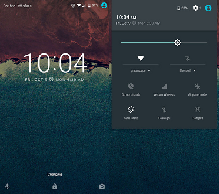
Example of a login screen on an Android running Marshmallow 6.01
Generally, devices running on the Android Marshmallow 6.01 will have several options to choose from the initial lock screen. Even if the user has a type of security set up, this will not hold any changes towards the initial lock screen. Hence these features are generally set up for quick accessibility, features that generally hold some sort of higher utility for users who do not have time to navigate through the lock screen in urgent situations. Features present in the initial lock screen include:
Voice Assist: The Voice Assist app for Android lets users control their device with spoken commands. Use voice commands to open apps, navigate, and edit text hands-free. The voice assist button is located on the bottom left of the lock screen and is accessed by holding your finger on it and swiping up in any direction.
Camera: The camera application also accessible in the lock screen allows for quicker access to the camera in case users need to snap proof of a UFO sighting. The camera button is located on the bottom right of the lock screen and is accessed by holding your finger on it and swiping up in any direction.
Pull-down menu: The pull-down menu is also accessible in the lock screen. Users are able to swipe down from Android’s pull-down menu bar in the lock screen, where they will get a panel of quick settings they can toggle with one tap.
Notifications: By default, users are able to see most of their notifications just by going to the lock screen. If they swipe on the notifications listed on the lock screen, they are able to close said notification. Users also have the choice of what they want to display in the lock screen, for example they have the ability to choose to hide sensitive information by changing the phone's settings.
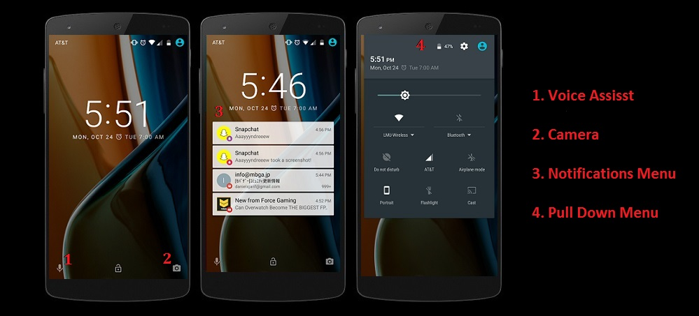
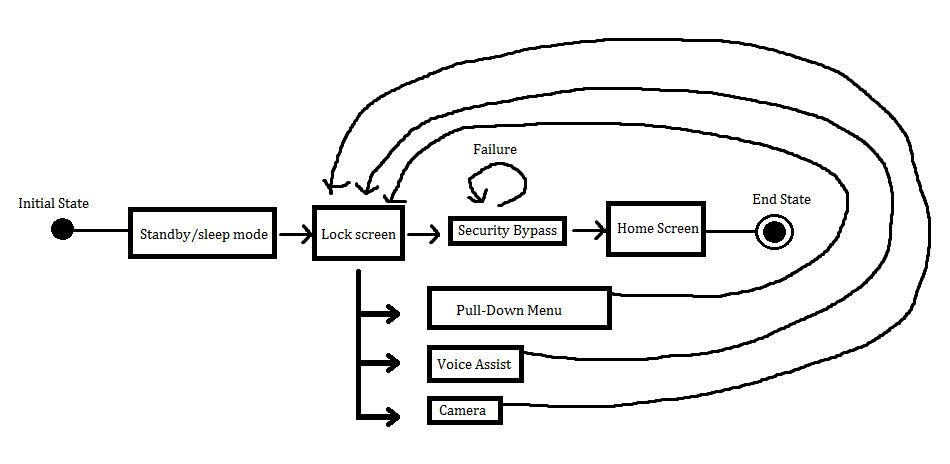
Users with devices running the Marshmallow have several options on what to choose from in terms of security type:
No Security/Swiping: This method of security will prompt the user to either just press on the lock button located to the side of the phone, which will directly bypass the lock screen effectively unlocking/logging into the phone, or press the lock button to enter the lock screen which will then have the user to swipe the screen in order to unlock the phone.
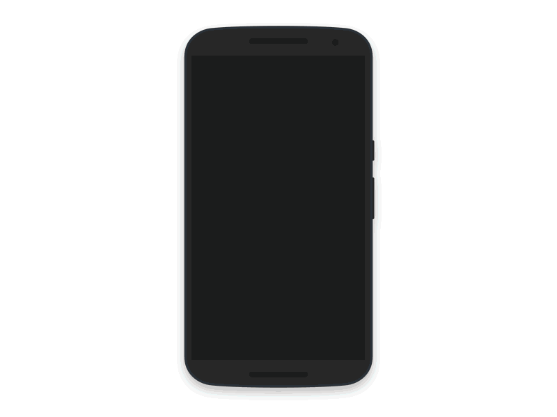
Unlocking the phone with a swipe security measure
Grid Pattern: This method of security will have the user making up a pattern on a 3x3 dotted grid. The pattern must have at least 4 connecting dots that must also be done in one stroke. Once the user sets up the pattern, it can be seen after swiping on the lock screen. The user is then prompted to enter the pattern which, if correct, will allow the user to log in to the phone.
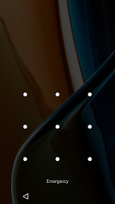
Default View of Grid Pattern Lock
Personal Identification Number (PIN): This method of security allows the user to use a set of four numbers to make up a PIN which will then be used as a passcode. Same as the pattern lock, it can be seen on the lock screen after swiping. This will then prompt the user to enter the 4 digit code ending with a tap to the checkmark button on the bottom right corner. If correct, this will allow the user to log in to the phone
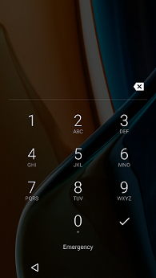
Default View of PIN Lock
Password: This method of security is perhaps the most common among all platforms. The password allows a user to enter a string of characters ranging from a minimum of four letters to a maximum of seventeen. Like both the pattern and grid lock, it can be seen on the lock screen after swiping. This will then prompt the user to enter the password ending with a tap to the checkmark button on the bottom right corner. If correct, this will allow the user to log in to the phone.
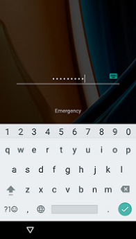
Default View of Password Lock
Users also have the chance to enter a personalized lock screen message that will show up in the initial lock screen. It is purely cosmetic and does not increase or decrease the security (unless the means to bypass security is explicitly written as the lock screen message). 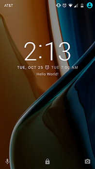
"Hello World" Lock Screen Message
The personalized message typically appears in a smaller font beneath the time and date displayed on the lock screen. For the typical appearance of a login/unlock screen, see typical appearance for Android Marshmallow.
The lock screen in general, is a screen in which the user does not generally more than a few seconds on. Therefore, information displayed on it first and foremost should display the most relevant information in most given situations such as the time, the date, and the day, most of which could be located on the mid to upper center area of the screen. The android lock screen will also show the user which pull-down menu feature the user has running and their current status(such as wifi, mobile data, location) on the upper right corner of the screen, along with the status of the phone's battery. The lock screen will also show the user's phone provider service on the upper left hand screen.
As most if not all Android phones that run on the Marshallow utilize a touchscreen, the lock screen on an Android behaves such that it will react to the user's touch. When the user touches the three icons on the bottom, the icons will react showing feedback. For example, the voice assist button and the camera button has a circle that engulfs the icons once pressed and as the user moves their finger, the circle will grow larger until the application is opened. Pressing those three buttons will show a prompt which tells the user to continue swiping in order to open the app or the phone.Basically an Android lock screen starts with the initial lock screen which displays the information (date, time, etc). If the user has set up an extra measure of security, swiping on the screen will bring up said measure of security, be it the grid pattern lock, or the pin lock, etc. Once the user has input the correct code, the user will then be lead to the phone's home screen, and thus the user will no longer be in the login screen.
The unlock, or rather, the lock screen for iOS 10 acts as a typical login/unlock screen would in that it provides security from any unwanted access to the device. However, iOS 10 has added features that allow the user to customize their lock screen to make it more convenient and usable for every day needs.
iOS 10 allows for a good amount of customization options for the appearance of the lock screen. There are a number of default wallpapers that can be set for the background as well as any photos from the user’s own photo library. Along with photos, iOS 10 allows users to make moving images or live photos the background of their lock screen. Users can also choose how they would like to format their date and time.
Default appearance for iOS 10 lock screen on the left and picture from user library on the right.
iOS 10 has various options for unlocking the device.
No Passcode: iOS 10 allows the user to have no passcode to unlock the device. In order to unlock the device, all the user has to do is press the home button.
Four or Six-Digit Passcode: The user has the option to choose a four or six-digit numeric passcode. To unlock their device, the user must first press the home button and then enter their passcode.
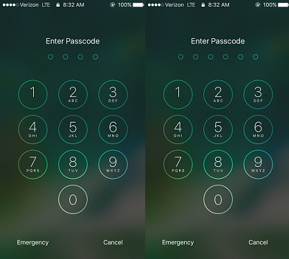
Option to enter a 4 or 6 digit passcode.
Numeric Passcode: The user can choose to have a passcode of any length of digits. To unlock the device, the user must first press the home button which will then prompt the user into entering their custom numeric passcode.
Alphanumeric Passcode: This option allows the user to create a passcode of any length comprised of letters, symbols, and digits. This option allows for the most customized and potentially safest passcode option. To unlock the device, the user must press the home button, which will allow them to enter their custom alphanumeric passcode.
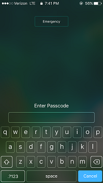
Option to enter a customizable alphanumeric passcode of any length.
Touch ID: Rather than having to enter a passcode, iOS 10 allows the user to enter their device by using their own finger print (if the device has the capabilities to do so). The user can store multiple finger prints that can unlock their device. The user can choose to either tap the home button to recognize the finger print, or to physically press the home button to read the finger print and unlock the device.
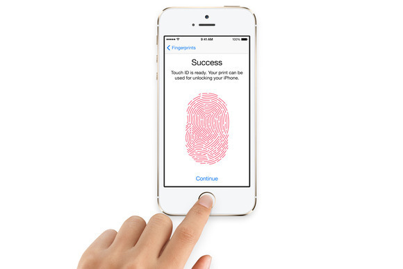
A user setting up Touch ID for thier iPhone.
The behavior of iOS 10’s lock screen is like that of any other kind of login/unlock screen; it serves to keep the device secure from any unwanted entry. However, iOS 10 allows for additional functionality within the lock screen.
Emergency Contact: iOS 10 allows any user of an iPhone the ability to contact emergency services from the lock screen of the phone.
Camera: By swiping from the right of the screen to the left, the user can access the device’s camera to take quick photos or videos.
Accessing camera from iOS 10 lock screen.
Notifications: By swiping from the top of the device’s screen downwards, the user can access any recent notifications they may have missed.
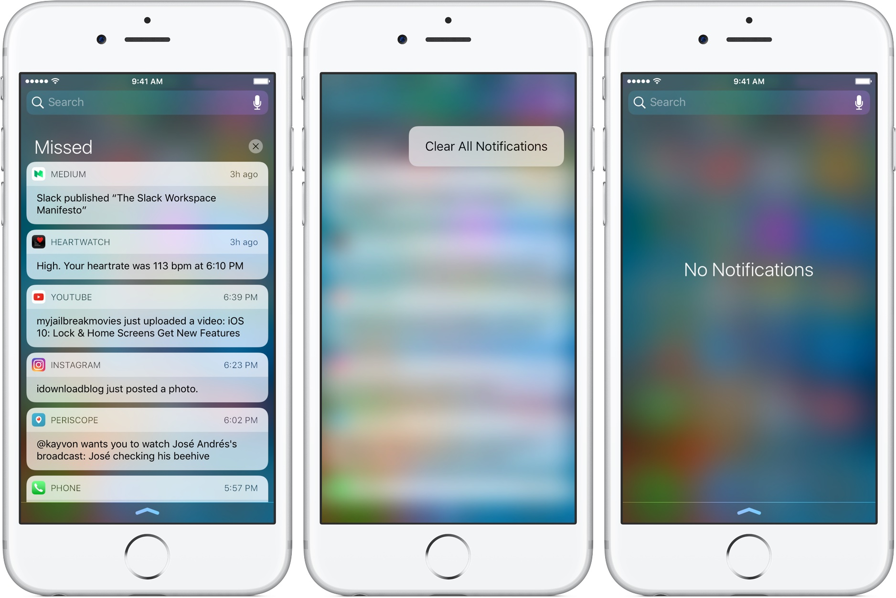
User's are able to see recent notifications from the lock screen.
Control Center: By swiping from the bottom of the device’s screen upwards, the user can access the control center, which allows for a wide arrange of convenient options like switching on and off airplane mode, Wi-Fi, and Bluetooth, changing the display’s brightness, and accessing convenient apps like the flashlight app, clock app, and the calculator app. There is even a page in the control center for music, which allows the user to change volume and skip between songs.
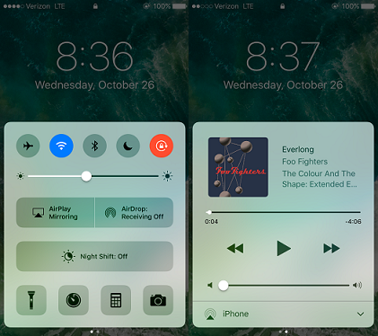
User's are able to use the control center from iOS 10's lock screen.
Widgets: By swiping from the left of the screen to the right, users can access the widgets menu which displays convenient information from certain apps, which the user can customize. For example, the widget for the weather app shows current weather and expected highs and lows for the day. The calendar widget shows any events scheduled in the user’s calendar, and the news widget shows the day’s top stories. Which widgets are displayed and in which order they are shown can all be edited by the user for an extra level of customization to the lock screen.
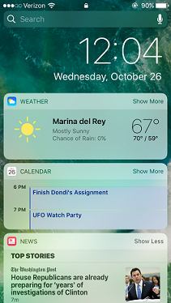
User's can customize their widgets for convenient app data.
Music: When the user is listening to music, album artwork and information about the song is displayed along with options to change the volume and skip between songs.
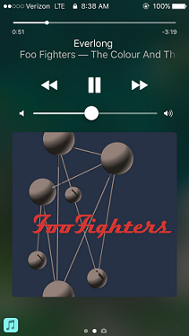
User's can see information of a song they are listening to and skip through songs.
Messages: Messages from any app show up on the lock screen when received. Messages received through the messages app (text messages) can be responded to directly from the lock screen if the user allows.
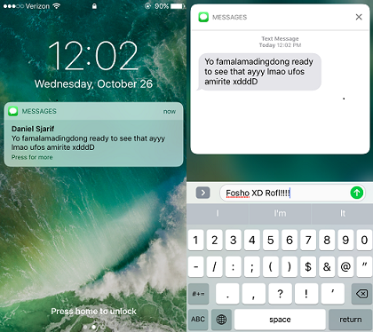
User's can see received messages and respond to them from iOS 10's lock screen.
Voice Control/Siri: iOS 10 allows the user to access voice commands or Siri if they choose. Voice commands make things like searching the internet or asking for directions easier and more convenient for the user. Instead of having to unlock their device, users can access voice commands and Siri right from the lock screen. Voice commands are activated by holding down the home button. This option can be switched off in settings if the user does not want others using voice commands. If the user has Siri activated, they have the option of having Siri recognizing their voice by saying, “Hey Siri,” which then allows them all the capabilities of Siri like web searches and other useful tasks.
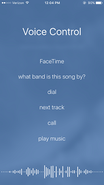
User's can access voice commands from iOS 10's lock screen.
The Windows 10 login screen utilizes the traditional features of previous Windows operating systems with a few new and subtle additions. With the rising popularity of mobile computing, the Windows 10 login screen has implemented features inspired by popular mobile platforms such as Android and iOS. These features make Windows 10's login screen more intuitive when used with a touchscreen and even provide functionality over the basic features of a regular login screen. This includes multiple methods of security (see: variants), a display for the status of certain apps, and even access to Cortana, Windows' "intelligent personal assistant", through vocal input.

Example of a lock screen on Windows 10
When first using a Windows 10 device, one might notice that the operating system uses both a lock screen and a login screen. From the initial lock screen, the user can click (or swipe upwards if their device has a touchscreen) to access the login screen. The lock screen displays information that you would typically check on at a glance without logging in to the computer. The information can be customized to suit the needs of the user. This includes:
Date and Time: A standard feature of lock screens on most platforms. The icon of an alarm clock will be displayed if the user has an upcoming alarm set.
Notifications: With this feature, users can view events and reminders that they've scheduled as well as notifications from various apps. The Windows 10 lock screen allows users to customize the notifications that are displayed. Supported applications for this feature include notifications from: Phone, Messaging, Xbox, Store, Calendar, and even Weather.
System Status Icons: These icons display information about the system including: internet connectivity, battery life, system notifications, and more.
Windows 10's lock screen allows the user to access Cortana through vocal commands. Users can ask her questions, create reminders, and add events to their calendars without unlocking their devices. It also allows users to open apps, conduct internet searches, send emails and texts, and more. This addition gives the user easy access to their computer when they need to be productive on the go. Cortana can be accessed using the vocal command "Hey, Cortana!"
The login screen can be accessed by clicking or swiping the lock screen. Windows 10 has various options for unlocking the device.
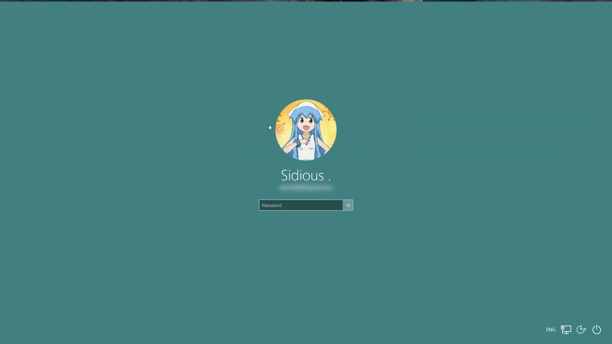
The standard password login screen.
Password: Windows 10 allows the user to protect their device using a password containing letters, symbols, and digits.
The PIN login screen.
Personal Identification Number (PIN): The user can choose to have a passcode of any length of digits.
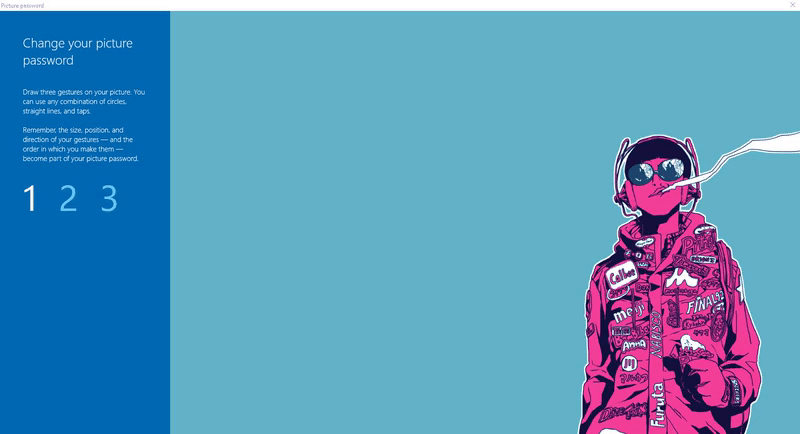
A picture password with 3 gestures.
Picture Password: This option allows the user to use gestures to unlock their device. For this option, the user chooses a picture then performs 3 gestures (either dots, circles, or lines) using the picture as a reference in place of a conventional password.
Apple Login Screen Instructions
Finger Print Scanner Image
History of Ctrl + Alt + Del
OS X Login Image
OS X Unlock Image
State Diagram
Windows Guidelines
Windows Login Image
Windows Login Screen Instructions
Windows Unlock Image
macOS Sierra Apple Watch Unlock
iOS 10 Camera From Lock Screen Gif
iOS 10 Finger Print Scanner Image
iOS Notifications From Lock Screen Image


{kind=link}
{kind=link}